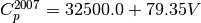
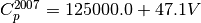

tank_design¶
Design and cost algorithms from ordinary vessels.
References
- 1(1,2,3)
Apostolakou, A. A., Kookos, I. K., Marazioti, C., Angelopoulos, K. C. (2009). Techno-economic analysis of a biodiesel production process from vegetable oils. Fuel Processing Technology, 90(7–8), 1023–1031. https://doi.org/10.1016/j.fuproc.2009.04.017
- 2(1,2)
Seider, W. D.; Lewin, D. R.; Seader, J. D.; Widagdo, S.; Gani, R.; Ng, M. K. Cost Accounting and Capital Cost Estimation. In Product and Process Design Principles; Wiley, 2017; pp 426–485.
-
class
biosteam.units.design_tools.tank_design.TankPurchaseCostAlgorithm(f_Cp, V_min, V_max, V_units, CE, material)[source]¶ Create a TankPurchaseCostAlgorithm for vessel costing.
- Parameters
f_Cp (function) – Should return the purchase cost given the volume.
V_min (float) – Minimum volume at which cost is considered accurate.
V_max (float) – Maximum volume of a vessel.
V_units (str) – Units of measure for volume.
-
f_Cp¶ Returns the purchase cost given the volume.
- Type
function
-
V_min¶ Minimum volume at which cost is considered accurate.
- Type
float
-
V_max¶ Maximum volume of a vessel.
- Type
float
-
V_units¶ Units of measure for volume.
- Type
UnitsOfMeasure
Examples
Find the number of mixing tanks and the total purchase cost at a volume of 1 m^3 using the purchase cost equation from 1:
>>> from biosteam.units._tank import TankPurchaseCostAlgorithm >>> TankPurchaseCostAlgorithm(lambda V: 12080 * V **0.525, ... V_min=0.1, V_max=30, V_units='m^3', ... CE=525.4, material='Stainless steel') TankPurchaseCostAlgorithm(f_Cp=<lambda>, V_min=0.1, V_max=30, CE=525.4, material=Stainless steel, V_units=m^3)
-
biosteam.units.design_tools.tank_design.compute_number_of_tanks_and_total_purchase_cost(total_volume, purchase_cost_algorithm, material_factor)[source]¶ Return number of tanks and total purchase cost of all tanks.
- Parameters
total_volume (float) – Total volume required [m^3].
purchase_cost_algorithm (TankPurchaseCostAlgorithm) – All costing options.
material_factor (float) – Material purchase cost factor.
-
biosteam.units.design_tools.tank_design.field_erected_tank_purchase_cost(V)[source]¶ Return the purchase cost [USD] of a single, field-erected vessel assuming stainless steel construction material.
- Parameters
V (float) – Volume of tank [m^3].
- Returns
Cp – Purchase cost [USD].
- Return type
float
Notes
The purchase cost is given by 1.
If :

Otherwise:

Examples
>>> from biosteam.units._tank import field_erected_vessel_purchase_cost >>> field_erected_vessel_purchase_cost(300) 112610.0
-
biosteam.units.design_tools.tank_design.storage_tank_purchase_cost_algorithms¶